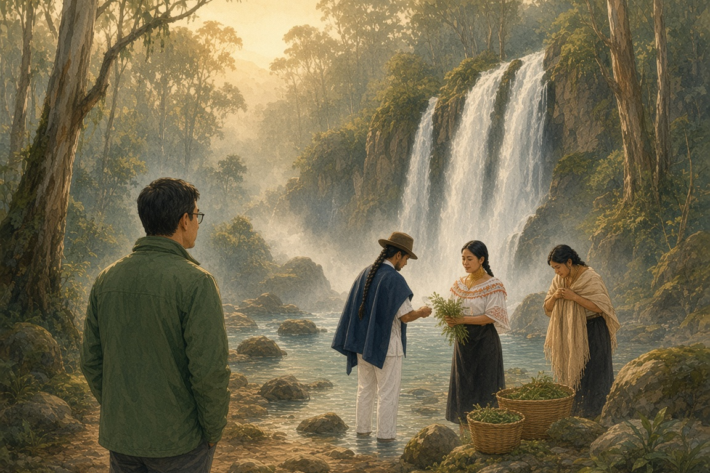

- B1
- La fiesta del Sol
El sol vuelve a Otavalo
En junio, en la plaza de Otavalo, el Inti Raymi no es una foto: es una memoria que sigue viva.
Texto
En junio viajé a Otavalo, en la sierra de Ecuador. Un amigo kichwa, Luis, me esperaba en la plaza. «Llegas en una buena semana —dijo—. Es el Inti Raymi, la fiesta del Sol.»
Yo sabía un poco del Inti Raymi de Cuzco, en Perú, pero esta fiesta es de aquí: de las comunidades de Imbabura. Se celebra alrededor del 21 de junio, cuando el solsticio marca un cambio de ciclo, y en los días siguientes hay música, danza y encuentros. El 24, en Otavalo, muchas comunidades hacen la toma de la plaza: entran al centro del pueblo bailando, con fuerza y alegría, y ocupan un espacio que es suyo.
Por la mañana, Luis me llevó cerca de una cascada. Algunas personas se bañan en el agua fría para empezar el ciclo más limpias. Yo no entré, pero observé el respeto con el que se preparaban. Después, en la plaza, sonaron flautas y tambores. Las mujeres llevaban blusas bordadas y cuentas brillantes; los hombres, ponchos y sombreros. Nadie bailaba para una foto. Bailaban juntos, en círculo, una y otra vez, y el suelo de la plaza vibraba un poco bajo los pies.

Luis me explicó que esta fiesta agradece a la tierra y al sol por la cosecha. No es un espectáculo de turismo, aunque hay visitantes. Es una memoria que sigue viva. Esa noche, cansado y contento, pensé en el calendario que uso en Estados Unidos. También nosotros miramos el sol, pero casi nunca lo celebramos así, en la plaza, con toda una comunidad. El mes que viene voy a recordar esa fila de danzantes cuando alguien hable de tradiciones andinas como si fueran solo del pasado. En Otavalo, el sol vuelve cada junio. Y la gente sale a recibirlo.